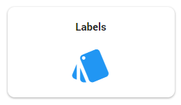

Indien gewenst, is het mogelijk om zelf labels te maken. U gaat hiervoor naar het Configuratie dashboard, vervolgens klikt u hier op de tegel Labels.

Voor de Woo zijn er al standaard labels aanwezig die u kunt gebruiken ten behoeve van het proces. Welke opties mogelijk zijn bij het aanmaken van labels kunt u terug vinden in het topic Tags (Engels).